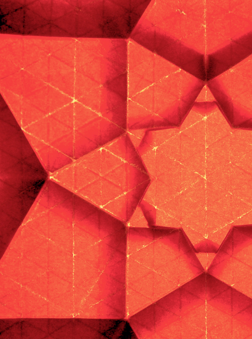

紙を折って動植物や生活道具などの形を作る日本伝統の遊び。また、折り上げられた作品そのものや、折り紙用に作られた正方形の専用紙のことも指す。
PAPER FOR FOLDING
The backlash of the Japanese tradition which folds paper and makes the shape of the animals and plants and the living tool. I also point at the square special paper with which the work broken up was made for itself and folding paper.

origami_PT
15/27